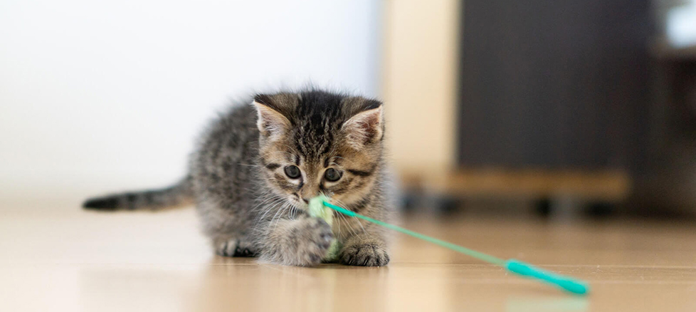
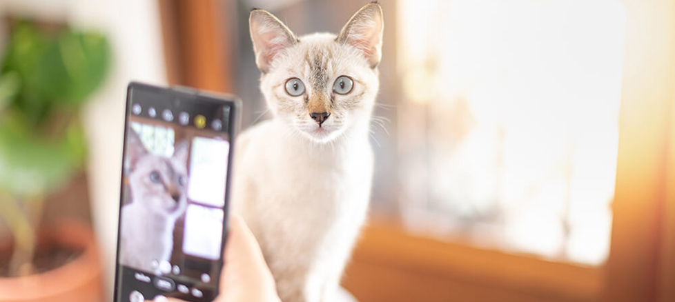

PATTYの楽しみ方
当店では様々な過ごし方がございます。あなたにあったペースで、猫のいる空間をお楽しみください。
猫とのふれあい
当店では、個性豊かな猫たちと触れ合うことができます。お気に入りの猫を見つけて、リラックスしながら一緒に過ごしましょう。

昼寝や読書でゆっくり過ごす
猫ちゃんとお昼寝するのもよし、本を読むのもよし。猫たちがそばにいるだけでリラックスでき、集中力も高まります。
猫を写真撮影
猫ちゃんたちのかわいい姿を写真に収めるのも楽しみのひとつです。特にSNS映えする写真を撮るのは人気の楽しみ方です。
※フラッシュOFFで撮影をお願いします。

カフェメニューを楽しむ
当店では、美味しいドリンクやスイーツが楽しめます。猫たちと一緒にゆったりとした時間を過ごしながら、カフェメニューを是非、堪能してください。